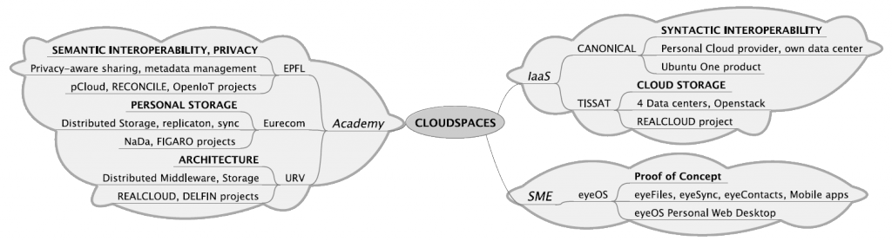

Partners
| Partic. no. | Participant name | Participant short name | Country |
| 1 | Universitat Rovira i Virgili | URV | Spain |
| 2 | Ecole Polytechnique Fédérale de Lausanne | EPFL | Switzerland |
| 3 | Institut Eurecom | EUR | France |
| 4 | NEC Ibérica | NEC | Spain |
| 5 | eyeOS | EOS | Spain |
| 6 | Tissat | TST | Spain |

The consortium has been carefully designed to create a balanced team between academia and industry to properly achieve the project objectives. Concerning the academic partners, Karl Aberer (EPFL) and Ernst Biersack (Eurecom) are world-wide leaders in the fields of distributed storage, scalable data management and trust infrastructures. The URV team (Pedro Garcia Lopez) has also relevant experience in distributed storage and software architectures, but also in technology transfer and project coordination. Concerning the industrial partners, the project includes a global open source provider (Canonical) offering a Personal Cloud Solution (Ubuntu One), a regional Cloud provider offering a Tier-4 data center (Uptime Institute) and experience in OpenStack (TISSAT), and an innovative SME software solution provider with a user base in more than 50 countries (eyeOS).
Universitat Rovira i Virgili (URV)
Description: The University Rovira i Virgili is a mid-sized University with approximately 12.000 students and 950 lecturers. The URV has eleven faculties and schools, which teach fifty different courses in the areas of health sciences, social sciences, humanities, technology and experimental sciences. At the Department of Computer Engineering and Mathematics, the research group of Architecture and Telematic Services participates in this project. This research group has experience in distributed systems, peer-to-peer networks, and software engineering and middleware.
Tasks: The main tasks assigned to URV are in WP1 (Management), WP2 (Architecture) and WP3(CloudSpaces Storage). Regarding WP2, the group has strong expertise in software engineering and middleware for large-scale distributed systems systems. To wit, we outline a recent PhD entitled:“On the Design and Optimization of Heterogeneous Distributed Storage Systems”. Further, URV collaborates with TISSAT in advanced storage solutions over the OpenStack platform. Finally, URV also contributes to WP4 and WP5 where the group has experience in software engineering and security.
Ecole Polytechnique Fédérale de Lausanne (EPFL)
Description: EPFL is one of the two Ecoles Polytechniques Fédérales in Switzerland. It has three missions: education, research and technology transfer at the highest international level. Associated with several specialized research institutes, the two EPFs form the EPF domain, which is directly dependent on the Federal Department of Home Affairs. The Distributed Information Systems Laboratory (LSIR) of EPFL’s School of Computer and Communication Sciences will participate in this project headed by prof. Karl Aberer.
Tasks: In CloudSpaces, EPFL is responsible for semantic interoperability aspects related to the data and process exchange among individuals and the Cloud. EPFL also deal with privacy-aware (controlled) data exchange as well as the trustworthiness assessment of the involved parties. EPFL’s contribution is centered around the definition of the Semantic Firewall and its enabling technologies for semantic interpretation, for privacy-exposure control and measurement, for dynamic trust assessment and for data provenance.
Institut Eurecom (EUR)
Description: Eurecom is a graduate school of engineering and research institute in telecommunications located in Sophia Antipolis, France. It is organized as a consortium of industrial and academic members including EPFL, Telecom Paris, Swisscom, Thales, SFR, Orange, SAP, STEricsson, BMW Group, Cisco, Monaco Telecom and Symantec, and European Universities (Politecnico di Torino in Italy, Helsinki University of Technology TKK, in Finland, Technische Universiteit Munchen in Germany, and the Norwegian University of Science and Technology in Norway). The Networking and Security group of EURECOM will participate in in this project.
Tasks: The main tasks assigned to EURECOM is on WP3 (CloudSpaces Storage). EURECOM has a strong expertise relevant to distributed storage systems, which includes peer-to-peer storage systems, erasure coding, concurrency, fault-tolerance.
NEC Ibérica (NEC)
Description: ...
Tasks: NEC plays an important role in CloudSpaces thanks to the experience of their Personal Cloud solution called Cloud Storage. NEC mainly work in the major aspect of interoperability that includes WP4 and WP5. Interoperability includes aspects of data portability and data sharing between Personal Clouds (WP4), but also with the interconnection of third-party applications (WP5). NEC will support these specification in the global Personal Cloud market and its global role helps to disseminate the results of the project.
EyeOS (EOS)
Description: eyeOS, headquartered in Barcelona, is a leading worldwide provider of open source web desktop software, with c.20.000 downloads per month and active communities in 67 countries. eyeOS web desktop is a full-fledged desktop computing solution addressing (i) the infrastructure issue (flexibility to set up private or hybrid Clouds), (ii) the content issue (RIA framework and apps) and (iii) the user experience issue (interface). In September 2011, the company has launched its first commercial license, the eyeOS Professional Edition. IBM has selected eyeOS as its preferred Open Source Cloud platform and signed a global distribution agreement with the company in 2010.
Tasks: eyeOS is responsible for tasks WP2, WP5 and WP6. eyeOS has a deep knowledge on data management (Store, Sync and Share), which will prove particularly relevant to WP5, and on developing a common mainframe that allows third-party applications execution.
Tissat (TST)
Description: Founded in Valencia (Spain) in 1990, TISSAT S.A. started its business by building communications infrastructure within the Valencian Region. Since 1996, the company evolved with the market and refocused its business to become a technology company that develops and provides advanced solutions and services for complex environments and Internet communications, contributing to the development of Information Society and adding value to business processes of organizations. Therefore, Tissat has 21 years of experience in developing applications and providing wide-range I.T. services, especially for big companies and Public Administrations, including several Ministries of the Spanish Government, and several Regional Governments in Spain.
Tasks: TISSAT plays different roles in the project, ranging from IaaS research tasks (including cloud operating and management environment) to IaaS provider. TISSAT provides the IT infrastructure to be used by the different actors, based on their data centers in order to develop multi-data center Cloud services. TISSAT also collaborate actively in the deployment and commercialization of SaaS services (Personal Cloud) developed in CloudSpaces.